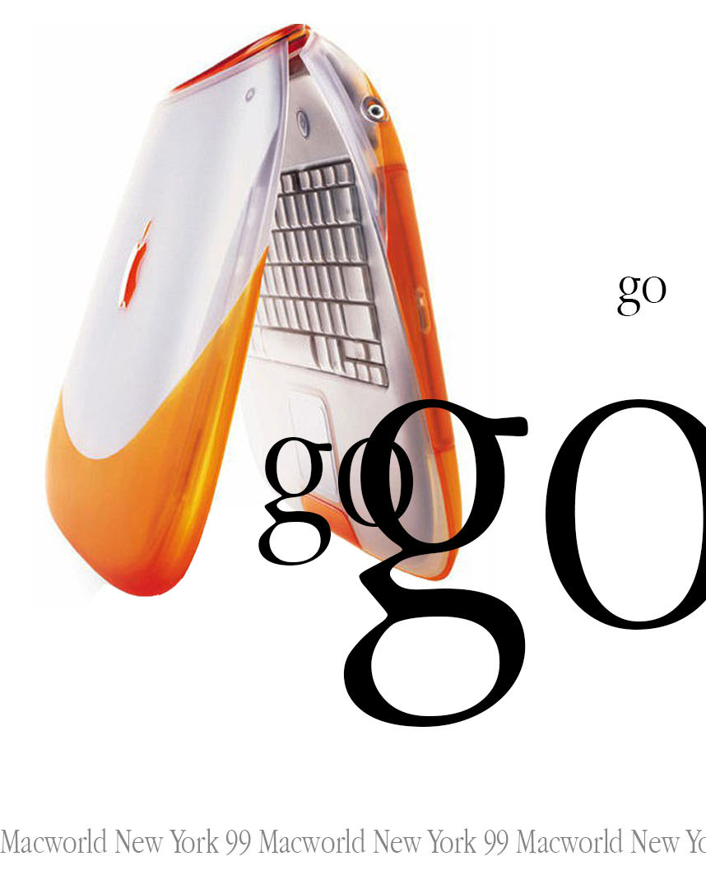
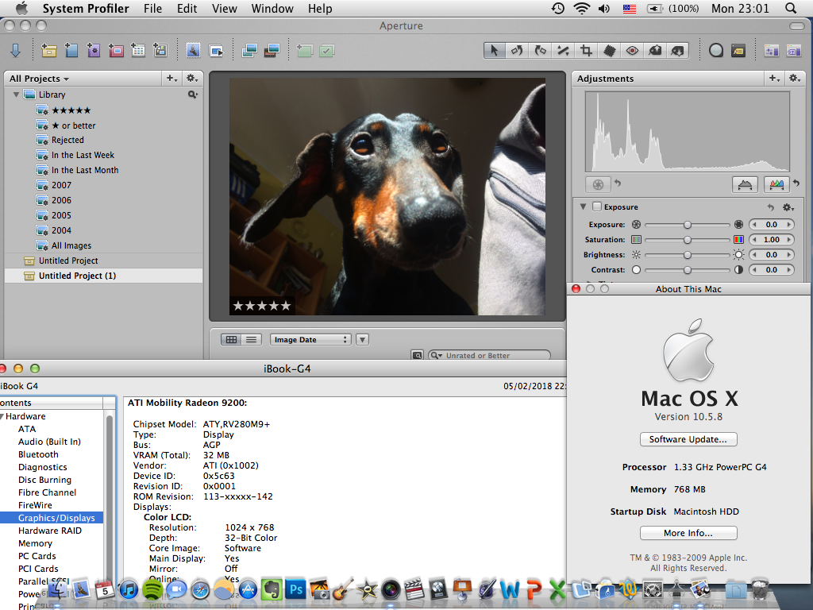

I have worked on several smaller projects before, nothing too intense,
but I still feel as if they are deserving of their own page!
Recreated Apple Posters
Description: After I wanted to hang a few posters around my room I noticed how shit the quality on every single image I could find on Google was... So I took matters into my own hands and recreated some of them using Photoshop and the highest quality archive images I could find. Some of them turned out quite decent, and I also still do commissions for them, so if you want a poster remade, shoot me an email and I'll be glad to redo it for you!
Apple Aperture Mod for low-spec PowerPC machines

Description: I wanted to run aperture on my shitty iBook, I couldn't, after some hunting around on the internet I managed to shit out a small mod that actually works fairly decently and will patch Aperture 1.5.6 to run just fine on out of date machines! Also Apple still provides downloads for this online, if I care enough later, or if someone actually asks me to, I'll write a small guide on how to obtain Aperture 1.5.6 using Pacifist and without fucking with torrents!
I also do and did a variety of other small and fun projects but nothing other people could benefit from.
I may write it down and photograph it some day, but I don't think people would be interested in that